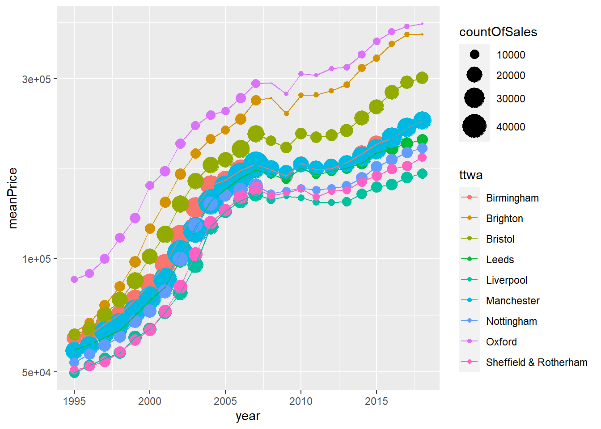

12 Using scales to control appearance
The last graph was getting there: it’s possible to see that prices were rising up until the crash - we’ll need some more tweaks to properly compare places with different average house prices.
(The count of sales isn’t the clearest way to show that the rate dropped - our earlier geom_bar did that better, but it illustrates using two geoms.)
It would be good to change a few things to make this more clear. One of the most essential ways of controlling appearance is through scales. The principle here is:
Every aesthetic mapping has its own scale. Each of these can be controlled.
This is true for the x and y mappings as well as everything else, including the colour, fill and size mappings we’ve used so far.
The basics are:
- All scales are controlled using functions that begin with scale_. Page 2 of the ggplot cheatsheet lists them.
- As the cheatsheet shows, the format is (for example) **scale_*_continuous** - replacing the asterisk with the mapping we want to control.
The most obvious kind of scale control you’ll want to do is on the x and y axes mappings. Particularly with prices, the most common of these has its own function: scale_y_log10 and scale_x_log10 both change the scales to log (base 10).
For house prices, this is ideal: it makes proportional change comparable so that (e.g.) London’s much higher prices can be visually compared to cheaper TTWAs.
This scale can be added with one line:
ggplot(saleSummary, aes(x = year, y = meanPrice, colour = ttwa)) +
geom_point(aes(size = countOfSales), colour = 'grey') +
geom_line() +
scale_y_log10() # <<< new log y scale
Where previously there appeared to be a marked difference in the post-crash response, the log scale shows that is perhaps not the case. London is still its own thing, as always.
Note: these are 10 of the richest areas. There will be a chance later to compare richer and poorer TTWAs to see if there was any difference.
Scale changes for other aesthetics have a range of options. An example will make this more clear. Say you want to control the size range for the points in the previous plot. Add the following scale code.
ggplot(saleSummary, aes(x = year, y = meanPrice, colour = ttwa)) +
geom_point(aes(size = countOfSales), colour = 'grey') +
geom_line() +
scale_y_log10() +
scale_size_continuous(range = c(0,10))
Another note: for things like scale changes, it doesn’t matter where in the ggplot argument order they go. Line order only makes a difference for the order that geoms draw in.
geom_point’s circles are larger - but London is dominating, having by far the most sales. One option is to remove London to see what the others look like.
We can use the dplyr verb filter to do this: it’s just a function, so as with anything else in R, it can be used anywhere. Here, we tell filter to give us all ttwas except London:
ggplot(saleSummary %>% filter(ttwa!='London'),
aes(x = year, y = meanPrice, colour = ttwa)) +
geom_point(aes(size = countOfSales), colour = 'grey') +
geom_line() +
scale_y_log10() +
scale_size_continuous(range = c(0,10))
Why did all the points become larger? Because the top of the range was previously London prices, making all the others relatively lower. Removing London changes that.
Note, the range size’s appearance will vary depending on the size of the overall plot. This can be seen if you look at it via zoom or export/copy to clipboard.
Is grey really working? If we want to try those points coloured by ttwa again, just remove the override (delete colour = ‘grey’):
ggplot(saleSummary %>% filter(ttwa!='London'),
aes(x = year, y = meanPrice, colour = ttwa)) +
geom_point(aes(size = countOfSales)) + #<<< removing colour = 'grey'
geom_line() +
scale_y_log10() +
scale_size_continuous(range = c(0,10))
Well, that’s messy! One more option that can sometimes make otherwise unreadable graphs workable: we change change alpha. This controls transparency:
- alpha = 1 means perfectly opaque
- alpha = 0 means perfectly transparent
So giving geom_point a value between those two (and note, we’re setting it directly so it’s outside of the aes function):
ggplot(saleSummary %>% filter(ttwa!='London'),
aes(x = year, y = meanPrice, colour = ttwa)) +
geom_point(aes(size = countOfSales), alpha = 0.3) + #<<< adding alpha value here
geom_line() +
scale_y_log10() +
scale_size_continuous(range = c(0,10))